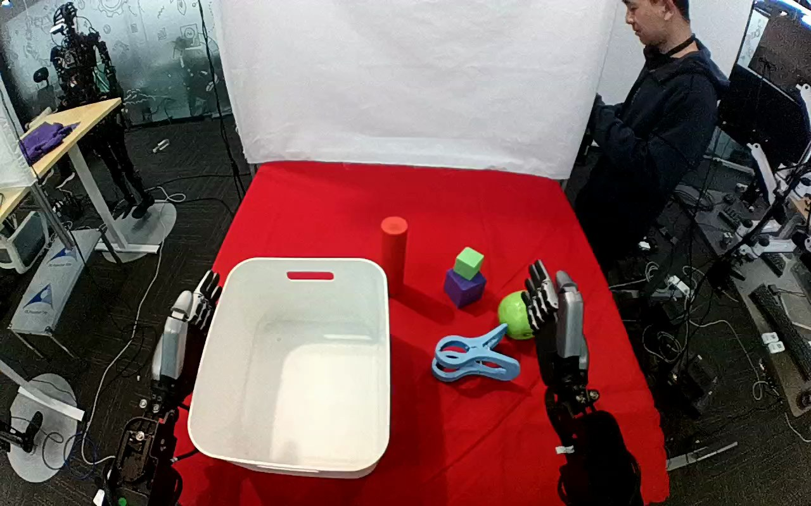

ActionNet · 01JJ15873JBIEVYT62
01jj15873jbievyt62

Annotation
From the dedicated visual review of this video (humanoid_action_v1). Plain text · JSON
Observed outcome
- Status
successful_visible_placement
- Description
The clamp is released inside the white container and remains resting on its floor while the hand from the lower-right edge withdraws and holds upright.
- Selected action outcome
successful_visible_placement
- Source overall success label
not used to infer outcome
Hand roles
- Lower right visible arm
Sole manipulating hand: sweeps in open over the clamp, closes curled fingers over the clamp body against the thumb underneath, lifts and bears the clamp, carries it left over the container rim, lowers it inside, opens, and withdraws upright to the lower right.
- Lower left visible arm
Stays upright beside the left rim of the container for the entire clip; no contact with the clamp, container or any other object.
Coordination
Single-hand object placement. No hand-to-hand transfer or bimanual stabilization. A person stands at the upper right, leans down and shuffles for part of the clip, then sits operating hand-held controllers; no contact with the robot or objects is observed.
Robot-side evidence
- Active arm
hand entering from the lower-right edge of the initial image
- Initial frame evidence
Two humanoid hands rise from the near lower image edges: one beside the left rim of the white container and one at lower right next to the green ball. The lower-right hand is the only one that moves. Torso and shoulders are outside the image, so attachment to the body cannot be seen; the camera looks over the work surface from the arm side, which suggests but does not prove that image-right is the robot's right.
- Confidence
Visible-arm identity is unambiguous; anatomical left/right is not independently established.
Chronology
| Frames | Observation |
|---|---|
| 0–22 | Both hands upright and clear. Blue plastic clamp lies on the red cloth in front of the lower-right hand; green ball, purple/green stacked blocks and red cylinder are on the cloth; the white container is empty. Person stands at upper right. |
| 24–88 | The lower-right hand tilts and moves toward the clamp with fingers extended and open. Native frame 72 shows the open fingertips pointing up-left past the clamp's handle end and the thumb at the lower side. |
| 90–134 | The hand settles on the clamp body: native frame 90 shows the fingers above it and the thumb below; by frame 110 the curled fingers cover the clamp body with the blue ring handle protruding left; frame 130 shows the closed grasp with the clamp still on the cloth. |
| 136–170 | The hand lifts the clamp off the cloth and rotates it so the ring handle points up-left. Native frame 170 shows the clamp airborne in the grasp. |
| 172–230 | The hand carries the clamp left across the cloth and over the container rim; native frame 190 shows it above the rim with the handle over the container interior. Person leans in at the upper right during this interval (no contact). |
| 232–262 | The hand lowers the clamp into the container (frames 230-250 show the clamp still in the grasp inside the rim). Exact release frame is occluded by the back of the hand. |
| 264–290 | The fingers open; native frame 270 shows the clamp lying on the container floor with open fingers above it and the thumb beside it. No pushing or re-grasp is seen. |
| 292–340 | The hand rises out of the container and swings right toward the cloth; frame 330 shows it open near the green ball and stacked blocks without touching them. |
| 342–404 | The hand rises to an upright pose beside the green ball (frame 350 fingers pointing up, thumb outward) and holds it through the final frame 404. The clamp rests on the container floor. A person sits at the right holding controllers. |
Differences from the publisher annotation
- The source names a container; the observed target is the open white plastic bin with a red handle slot, consistent with the annotation.
- The source calls the object a clamp; visually it is a blue plastic spring clamp or clip with a ring handle, consistent with the annotation.
- The annotation does not specify which hand; the lower-right visible hand acts and the lower-left stays idle.
Uncertainties
- Torso and shoulder attachment are outside the image, and camera pose or mirroring is not independently established. Anatomical left/right is uncertain; prompt uses the unambiguous hand entering from the lower-right edge.
- The exact first table-separation and release frames are partially occluded by the hand; the chronology intervals bracket the visible transitions.
- The clamp may be grasped at its jaw end or body; occlusion by the hand prevents naming the exact contact points, so the prompt says clamp body with the thumb beneath.
- The nearby person moves and leans in during the clip; no contact with the robot or task objects is visible.
Complete review record action_review.json
{
"dataset": "ActionNet",
"episode_id": "01JJ15873JBIEVYT62",
"prompt_protocol": "humanoid_action_v1",
"prompt_provenance": "visually_authored_from_video_and_initial_frame",
"review_scope": "One dedicated agent reviewed the complete unchanged 405-frame top/rgb.mp4 and the generation first frame. Full single-task sequence retained.",
"source_video": "../../original/top/rgb.mp4",
"conditioning_first_frame": "../first_frame.png",
"generation_video": "../../original/top/rgb.mp4",
"action_prompt": "../actiongeneration_prompt.txt",
"source_frame_start": 0,
"source_frame_end_exclusive": 405,
"fps_rational": "30/1",
"resolution": [
1280,
800
],
"source_annotation": {
"verbatim_task_prompt": "Pick up the clamp and place it into the container.",
"task_prompt_path": "../../original/task_prompt.txt"
},
"anatomical_side_evidence": {
"active_arm": "hand entering from the lower-right edge of the initial image",
"initial_frame_evidence": "Two humanoid hands rise from the near lower image edges: one beside the left rim of the white container and one at lower right next to the green ball. The lower-right hand is the only one that moves. Torso and shoulders are outside the image, so attachment to the body cannot be seen; the camera looks over the work surface from the arm side, which suggests but does not prove that image-right is the robot's right.",
"confidence": "Visible-arm identity is unambiguous; anatomical left/right is not independently established."
},
"arm_roles": {
"lower_right_visible_arm": "Sole manipulating hand: sweeps in open over the clamp, closes curled fingers over the clamp body against the thumb underneath, lifts and bears the clamp, carries it left over the container rim, lowers it inside, opens, and withdraws upright to the lower right.",
"lower_left_visible_arm": "Stays upright beside the left rim of the container for the entire clip; no contact with the clamp, container or any other object."
},
"coordination": "Single-hand object placement. No hand-to-hand transfer or bimanual stabilization. A person stands at the upper right, leans down and shuffles for part of the clip, then sits operating hand-held controllers; no contact with the robot or objects is observed.",
"chronology": [
{
"frames": [
0,
22
],
"observation": "Both hands upright and clear. Blue plastic clamp lies on the red cloth in front of the lower-right hand; green ball, purple/green stacked blocks and red cylinder are on the cloth; the white container is empty. Person stands at upper right."
},
{
"frames": [
24,
88
],
"observation": "The lower-right hand tilts and moves toward the clamp with fingers extended and open. Native frame 72 shows the open fingertips pointing up-left past the clamp's handle end and the thumb at the lower side."
},
{
"frames": [
90,
134
],
"observation": "The hand settles on the clamp body: native frame 90 shows the fingers above it and the thumb below; by frame 110 the curled fingers cover the clamp body with the blue ring handle protruding left; frame 130 shows the closed grasp with the clamp still on the cloth."
},
{
"frames": [
136,
170
],
"observation": "The hand lifts the clamp off the cloth and rotates it so the ring handle points up-left. Native frame 170 shows the clamp airborne in the grasp."
},
{
"frames": [
172,
230
],
"observation": "The hand carries the clamp left across the cloth and over the container rim; native frame 190 shows it above the rim with the handle over the container interior. Person leans in at the upper right during this interval (no contact)."
},
{
"frames": [
232,
262
],
"observation": "The hand lowers the clamp into the container (frames 230-250 show the clamp still in the grasp inside the rim). Exact release frame is occluded by the back of the hand."
},
{
"frames": [
264,
290
],
"observation": "The fingers open; native frame 270 shows the clamp lying on the container floor with open fingers above it and the thumb beside it. No pushing or re-grasp is seen."
},
{
"frames": [
292,
340
],
"observation": "The hand rises out of the container and swings right toward the cloth; frame 330 shows it open near the green ball and stacked blocks without touching them."
},
{
"frames": [
342,
404
],
"observation": "The hand rises to an upright pose beside the green ball (frame 350 fingers pointing up, thumb outward) and holds it through the final frame 404. The clamp rests on the container floor. A person sits at the right holding controllers."
}
],
"observed_outcome": {
"status": "successful_visible_placement",
"description": "The clamp is released inside the white container and remains resting on its floor while the hand from the lower-right edge withdraws and holds upright.",
"selected_action_outcome": "successful_visible_placement",
"source_overall_success_label": "not used to infer outcome"
},
"source_annotation_discrepancies": [
"The source names a container; the observed target is the open white plastic bin with a red handle slot, consistent with the annotation.",
"The source calls the object a clamp; visually it is a blue plastic spring clamp or clip with a ring handle, consistent with the annotation.",
"The annotation does not specify which hand; the lower-right visible hand acts and the lower-left stays idle."
],
"uncertainties": [
"Torso and shoulder attachment are outside the image, and camera pose or mirroring is not independently established. Anatomical left/right is uncertain; prompt uses the unambiguous hand entering from the lower-right edge.",
"The exact first table-separation and release frames are partially occluded by the hand; the chronology intervals bracket the visible transitions.",
"The clamp may be grasped at its jaw end or body; occlusion by the hand prevents naming the exact contact points, so the prompt says clamp body with the thumb beneath.",
"The nearby person moves and leans in during the clip; no contact with the robot or task objects is visible."
],
"inspection_coverage": {
"total_decoded_frames": 405,
"overview_frame_indices": {
"start": 0,
"stop_inclusive": 404,
"step": 2,
"count": 203
},
"overview_method": "Decoded RGB every second frame into seventeen temporary 4-by-3 contact sheets outside dataset folders; reviewed all sheets.",
"native_resolution_frames": [
0,
72,
90,
110,
130,
150,
170,
190,
210,
230,
240,
250,
270,
330,
350,
404
],
"native_resolution": [
1280,
800
],
"initial_png_inspected_after_full_sequence": true,
"temporary_evidence_location": "/tmp/an_review_01JJ15873JBIEVYT62 (not under generation input)",
"retained_evidence_frame_directories": false
},
"preservation": {
"whole_original_single_task_clip_retained": true,
"crop": false,
"shorten": false,
"resize": false,
"reencode": false,
"source_and_generation_sha256_equal": true
},
"prompt_word_count": 82
}